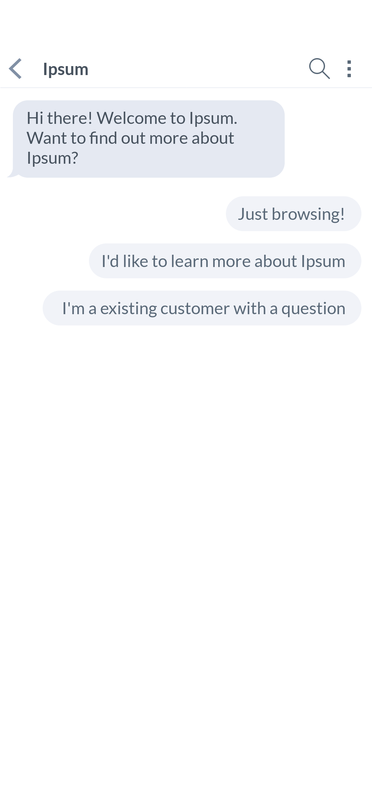
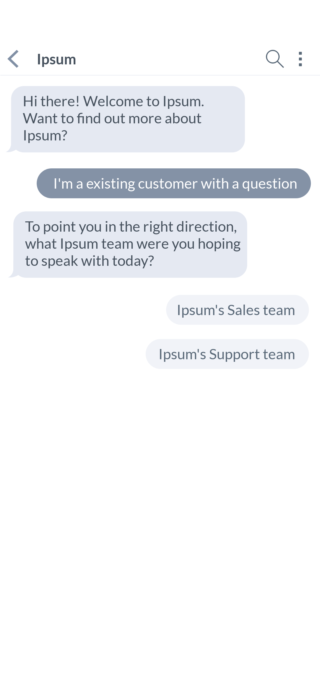
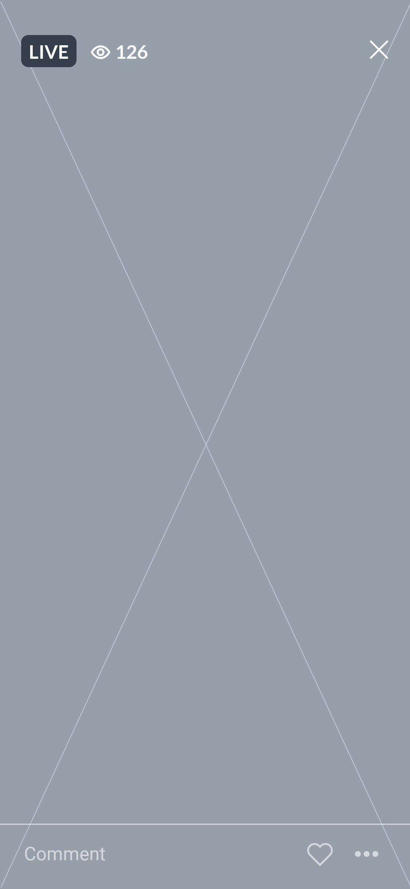

Messaging
메시지 송수신, 챗봇
‘Messaging’ 태스크는 사용자가 다른 사용자와 메신저에서 메시지의 송수신으로 대화를 나누는 형태, 기업이나 단체의 공식 계정의 챗봇(chatbot)과 고객 관계 관리(CRM)의 형태, 그리고 실시간 방송에서 참가자의 메시징 송신 형태로 구분된다.
활용 방법 →‘Messaging’ 태스크 화면 흐름
‘Messaging’ 태스크 화면 설계
메신저에서의 대화 (Chat)
대화하고자 하는 다른 사용자 혹은 그룹을 선택한 뒤 인입되는 페이지이다. 일반적인 텍스트형 메시지의 송수신부터 메시지 텍스트의 맥락을 보다 다양한 콘텐츠로 전달하고 활용할 수 있도록 확장 기능을 제공한다. 텍스트가 포함하는 정보를 보다 구체적으로 전달할 수 있는 사진 및 지도 정보의 공유, 그리고 일정이나 연락처 등 사용자가 직접 캘린더 추가, 연락처 추가 등으로 다른 애플리케이션에서 실행할 수 있는 정보의 공유 등이 이에 해당한다. 비즈니스용 메신저의 경우 대화 채널의 생성 및 관리, 마크다운 등을 활용한 텍스트 정보 가시성을 위한 기능, 일자 및 채널, 수신자 등의 정보 색인, 관련 익스텐션 제공 등의 확장 기능으로 업무용으로 활용할 수 있도록 한다.

챗봇 대화 (Chatbot)
사용자가 기업이나 단체의 공식 계정과의 대화 기능을 선택한 뒤 인입되는 페이지로 구조 자체는 메신저 대화와 유사하다. 일반적으로 사용자의 자유로운 텍스트 기입은 제한되어 있으며, 해당 공식 계정에서 세팅한 질문을 내로우 다운하여 사용자가 원하는 답을 찾을 수 있도록 한다.
 방송 대화 (Live chat)
실시간 방송에서 참가자의 피드백이 메시징 형태로 표시된다. 실시간 방송 화면과 함께 텍스트 혹은 이모지 등의 리액션을 송신하는 제한적 기능으로 구성되어 있다.
